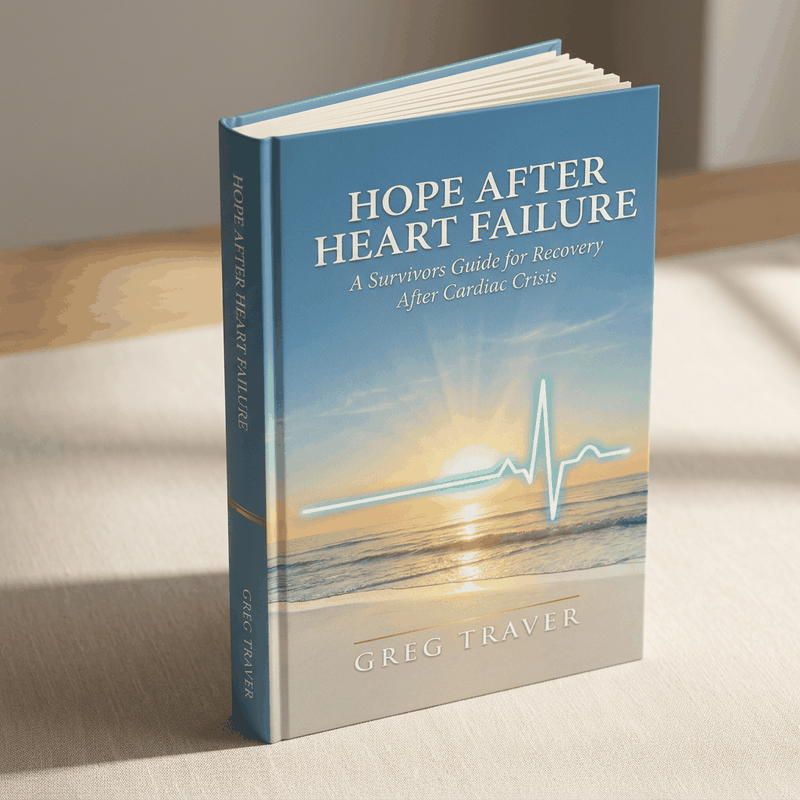

The Newly Diagnosed
You've just received news that has turned your world upside down. The fear is real. The uncertainty is overwhelming. This book speaks directly to where you are right now — and gently shows you the path forward.
A Survivor's Guide for Recovery After Cardiac Crisis
Because surviving is just the beginning.
📖 Get Chapter 1 Free 📚 Buy the Book
“Just when you think that your Life has Shattered,
A New Life Has Begun.”
This Book Is For You
Heart failure is not just a medical event. It is a life-altering experience that touches every part of who you are. This book was written for everyone who has lived through it — and everyone who loves them.
You've just received news that has turned your world upside down. The fear is real. The uncertainty is overwhelming. This book speaks directly to where you are right now — and gently shows you the path forward.
Years have passed, but the shadow of heart failure still visits. You've learned to live with it, but you wonder if you could live better. This book helps you move from managing illness to embracing life.
You love someone who has survived heart failure. You want to understand what they're going through — not just physically, but emotionally and spiritually. This book opens that door.
The memory lapses, the difficulty concentrating, the feeling that your mind isn't quite your own — this is real, it has a name, and there is a path through it. You are not losing yourself.
Surviving a near-death experience changes you. You're asking bigger questions now — about purpose, about faith, about what this second chance means. This book walks that sacred ground with you.
You've done the hard work of surviving. Now you're ready to do something even harder — to truly live. To laugh without guilt. To plan without fear. To believe in miracles again.
“You are not merely regaining focus — you are awakening vision. The ability to see not only life, but eternity, more clearly than before.” — From Chapter 8: Clarity Awakens
“You are living proof that God restores not only hearts but harmony. As you live whole again, you reflect heaven's rhythm on earth — a steady, peaceful heartbeat of gratitude that says to the world, I am still here. I am still His. And that is enough.”— From Chapter 9: Living Whole Again
 You Are Not Alone
You Are Not Alone
— Community Resources
Recovery from heart failure is not a solitary journey. These trusted organizations offer support, education, and community for survivors and their families.
Medical Support American Heart Association Heart failure resources, support groups, and patient education ↗ Peer Support Mended Hearts Peer-to-peer support for heart disease patients and their families ↗ Clinical Resources Heart Failure Society of America Patient resources, clinical guidance, and community connections ↗ Education CardioSmart (ACC) Patient education from the American College of Cardiology ↗ Women's Health WomenHeart Support and advocacy for women living with heart disease ↗“Most of all, this book demonstrates that there are no limits to miracles — and that there is Hope After Heart Failure.”
— Get the Book
Available now on Books.by. Order your copy and take the first step toward understanding not just how to survive heart failure — but how to truly live again.
✉ Stay Connected
Receive updates, encouragement, and resources for your healing journey.
No spam, ever. Unsubscribe anytime.
Heart Failure Awareness Week
Know someone navigating heart failure? This book makes a meaningful, life-changing gift for survivors and their loved ones.
Here to help. Always available.